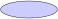
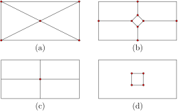

Back in Chapter 1 we motivated the study of non-Euclidean geometry with a question in cosmology: What is the shape of the universe? We discussed the idea that different shapes inherit different types of geometry. Indeed, the rules of geometry are different on a sphere than on a flat plane. In this section we take a break from geometry in order to discuss the shapes themselves.
In topology one studies those features of a space that remain unchanged if the space is stretched or otherwise continuously deformed. Such features of a space are called topological features.
The features of a space that do change under such deformations are geometric features. For instance, as a ball is inflated its volume, curvature, and surface area change; these are geometric properties. On the other hand, no matter how big or lumpy the ball gets, or how it is stretched (unless it pops!), a loop drawn on the surface of the ball separates the surface into two disjoint pieces. This is a topological property of the ball. A second topological property of a space is whether any loop drawn on it can be continuously contracted (while staying in the space) to a point. The sphere also has this feature. Nothing about the sphere's shape prevents a loop from shrinking on the surface to a point.
Figure7.5.1 The sphere and torus are topologically distinct.
On the surface of a donut there are loops one can draw that do not separate the surface into disjoint pieces. The loop that goes around the donut like an armband in Figure 7.5.1 is one such loop. Furthermore, this loop cannot be continuously contracted to a point while staying on the surface. This suggests the surface of a ball and the surface of a donut are topologically different shapes.
The sphere is an example of a simply connected space because any loop drawn on the surface can be contracted to a point. The torus is an example of a multiconnected space because there exist loops in the torus that cannot be contracted to a point.
Roughly speaking, two spaces are topologically equivalent, or homeomorphic, if one can be continuously deformed to look like the other. For instance, a circle is topologically equivalent to a square. One can be mapped onto the other via a homeomorphism: a continuous bijection between the objects that has a continuous inverse. One homeomorphism is suggested in the following example.
Example7.5.2A circle is homeomorphic to a square
Construct a homeomorphism as follows. Assume the square and circle are concentric as shown below, and that \(z_0\) is the center of the circle. Then, for each point \(z\) on the square, define \(T(z)\) to be the point on the circle through which the ray \(\overrightarrow{z_0z}\) passes. One can show that \(T\) is a homeomorphism: it is a 1-1 and onto function that is continuous, and its inverse is continuous as well.
We are quickly heading into the realm of topology, and must resist the temptation to dive headlong and formally into this rich subject. In this text we restrict our focus to a whirlwind tour of topological tools that are used to investigate possible shapes for two- and three-dimensional universes. We encourage the reader interested in a more formal approach to the subject to consult any number of good texts, including [9].
Our candidate universes are examples of manifolds. A topological \(n\)-manifold is a space with the feature that each point in the space has a neighborhood that looks like a patch of \(\mathbb{R}^n\text{.}\) In cosmology, the spatial section of space-time is assumed to be a 3-manifold, and when we ask about the shape of the universe, we are asking about the shape of this 3-manifold. In this section we focus on 2-manifolds.
A bit more formally, \(\mathbb{R}^n\) consists of all \(n\)-tuples of real numbers \(\boldsymbol{p} = (x_1, x_2, \ldots, x_n)\text{.}\) The open \(n\)-ball centered at a point \(\boldsymbol{p}\) in \(\mathbb{R}^n\) with radius \(r \gt 0\text{,}\) denoted \(B_n(\boldsymbol{p},r)\text{,}\) is the set
where \(|\boldsymbol{x} - \boldsymbol{p}|\) is the Euclidean distance between the points \(\boldsymbol{x}\) and \(\boldsymbol{p}\text{.}\)
For instance, an open 1-ball is an open interval in \(\mathbb{R}\text{.}\) The open 2-ball \(B_2(z_0,r)\) consists of all points \(z\) in \(\mathbb{C}\) such that \(|z - z_0| \lt r\text{.}\) The open 3-ball \(B_3(\boldsymbol{p},r)\) consists of all points in \(\mathbb{R}^3\) inside the sphere centered at \(\boldsymbol{p}\) with radius \(r\text{.}\)
Figure7.5.3 Open \(n\)-balls for \(n=1,2,3\text{.}\)
A topological \(n\)-manifold is a space \(X\) with the feature that each point in \(X\) has a neighborhood that is homeomorphic to an open \(n\)-ball.
A circle is an example of a 1-manifold: each point on a circle has a neighborhood homeomorphic to an open interval. The surface of a sphere is a 2-manifold: each point on the sphere has a neighborhood that is homeomorphic to an open 2-ball.
Example7.5.4Some 2-manifolds
a. Let \(S\) consist of parallel planes in \(\mathbb{R}^3.\) In particular, let \(S = \{(x,y,z) \in \mathbb{R}^3 ~|~ z = 0~\text{or}~z=1\}\) as in part (a) of the following diagram. Each point in \(S\) has a neighborhood of points that is an open 2-ball.
b. The open unit disk \(\mathbb{D} = \{z \in \mathbb{C} ~|~ |z| \lt 1\}\) is a 2-manifold. Each point in \(\mathbb{D}\) has a neighborhood that is an open 2-ball in the plane. In particular, if \(|z| = r \lt 1\text{,}\) let \(s = 1-r\text{.}\) Then \(B_2(z,s)\) does the trick.
c. The flat torus. Consider the flat torus of chapter 1, which has been redrawn in Figure 7.5.5. It consists of all points in a rectangle drawn in the Euclidean plane, with the additional feature that each point on the top edge is identified with the point on the bottom edge having the same \(x\)-coordinate; and each point on the left edge is identified with the point on the right edge having the same \(y\)-coordinate. In Figure 7.5.5 we indicate this edge identification with oriented labels: the \(a\) edges get identified by matching the arrow orientations, as do the \(b\) edges.
Each point in the flat torus has a neighborhood homeomorphic to an open 2-ball.
If a point \(p\) is not on an edge, as in Figure 7.5.5, then by choosing a radius small enough, there is an open 2-ball about the point that misses the edges.
If a point \(q\) is on an edge but not at a corner, then by choosing a radius small enough, there is an open 2-ball about the point that misses the corners. This open 2-ball consists of parts of two open 2-balls from \(\mathbb{R}^2\text{.}\) Because of the edge identification, these open 2-ball halves come together to form a perfect open 2-ball about the point.
If a point \(u\) is at a corner of the rectangle, there is an open 2-ball about the point that consists of parts of four different open 2-balls from \(\mathbb{R}^2\text{.}\) Because of the edge identification, these four “quarter balls” come together to form a single open 2-ball of points around the corner point.
Figure7.5.5 The flat torus is a 2-manifold as well as a surface
Definition7.5.6
A surface is a closed, bounded, and connected topological 2-manifold.
Of the 2-manifolds in Example 7.5.4, only the third is a surface according to this definition. A set in \(\mathbb{R}^n\) is bounded if it lives entirely within some open \(n\)-ball of finite radius. The parallel planes manifold extends infinitely far away from the origin in \(\mathbb{R}^3\) so this manifold is not bounded. This manifold is not connected either. Informally, a space is connected if it has just one piece. The parallel planes manifold has two distinct pieces (the two planes) that are separated in space, so it is not connected. The open unit disk \(\mathbb{D}\) is bounded and connected, but not closed as a set in \(\mathbb{R}^2\text{.}\) A set \(S\) in \(\mathbb{R}^n\) is closed if it has the following feature: if \(\{z_k\}\) is a sequence of points in \(S\) that converges to a point \(z\text{,}\) then \(z\) is also in \(S\text{.}\)
To see that \(\mathbb{D}\) is not closed, consider the sequence \(\{\frac{1}{2},\frac{2}{3}, \frac{3}{4}, \frac{4}{5},\ldots \}\text{.}\) Each point in this sequence lives in \(\mathbb{D}\text{,}\) but the limit of the sequence, which is 1, does not. The torus, on the other hand, is closed, boundede, and connected, so we call it a surface. We note that another topological term, compactness, is often used when discussing surfaces. A space living in \(\mathbb{R}^n\) is compact if and only if it is closed and bounded. Thus, for us, a surface is a compact, connected 2-manifold.
Rather than concern ourselves with a formal development of these topological concepts, we take with us this informal introduction to help us to pursue the construction of surfaces. It turns out that all surfaces can be built from the three venerable surfaces in Figure 7.5.7 by a process called the connected sum.
Figure7.5.7 The sphere \(\mathbb{S}^2\text{,}\) the torus \(\mathbb{T}^2\text{,}\) and the projective plane \(\mathbb{P}^2\text{.}\)
Connected Sum
If \(X_1\) and \(X_2\) are surfaces, the connected sum surface, denoted \(X_1 \#
X_2\text{,}\) is obtained as follows:
Remove an open 2-ball from \(X_1\) and an open 2-ball from \(X_2\text{;}\)
Connect the boundaries of these open 2-ball with a cylinder.
Note that since \(X_i\) is a surface, each point in each space has a neighborhood homeomorphic to an open 2-ball, so we may always achieve the connected sum of two surfaces. The result is a new surface: it is still closed, bounded, and connected, and each point still has an open neighborhood homeomorphic to an open 2-ball.
Figure7.5.8 Some connected sums.
Example7.5.9Some connected sums
Let \(\mathbb{T}^2\) denote the torus surface in \(\mathbb{R}^3\) and \(\mathbb{S}^2\) denote the sphere, as usual. Figure 7.5.8 depicts two connected sums: \(\mathbb{T}^2 \# \mathbb{T}^2\text{,}\) and \(\mathbb{S}^2 \# \mathbb{T}^2\text{.}\) The surface \(\mathbb{T}^2 \# \mathbb{T}^2\) is called the two-holed torus, and it is topologically equivalent to the surface labeled \(H_2\) in Figure 7.5.10. One can shrink the length dimension of the connecting cylinder to make the one look like the other. The surface \(\mathbb{S}^2 \# \mathbb{T}^2\) is homeomorphic to the torus \(\mathbb{T}^2\text{.}\) To see this, observe that if one removes an open-2 ball from a sphere and attaches one end of a cylinder to the sphere along the boundary of the removed disk, the result is homeomorphic to a closed disk, as suggested in the following diagram. So, if one removes an open 2-ball from a surface \(X\) and then caps the hole with this sphere-with-cylinder shape, the net effect is patching the hole. In the arithmetic of connected sums, the sphere plays the role of \(0\text{:}\) \(\mathbb{S}^2 \# X = X\) for any surface \(X\text{.}\)

For each integer \(g \geq 1\text{,}\) the handlebody surface of genus \(g\), denoted \(H_g\text{,}\) is defined as
The surface \(H_g\) gets its name from the fact that it is topologically equivalent to a sphere with \(g\) handles attached to it. For this reason, we set \(H_0 = \mathbb{S}^2\text{.}\) A few handlebody surfaces are pictured in Figure 7.5.10.
Figure7.5.10 Some handlebody surfaces.
For each integer \(g \geq 1\text{,}\) define the cross-cap surface of genus \(g\) by
A cross-cap is the space obtained by removing an open 2-ball from the projective plane \(\mathbb{P}^2\text{.}\) The cross-cap surface \(C_g\) is topologically equivalent to a sphere with \(g\) open 2-balls removed and replaced with cross-caps.
The surface \(C_1\) is the projective plane. This space does not embed in \(\mathbb{R}^3\) as the handlebody surfaces do, but it can be represented as a disk with antipodal points identified, as we did in Chapter 6. Figure 7.5.11 depicts the connected sum \(C_1 \# C_1\text{.}\) In Figure 7.5.11(a), we have removed an open ball from each copy of \(C_1\text{.}\) The boundary circles of these open 2-balls must be joined, and we indicate this by orienting the boundary circles and giving each one the same label of \(c\text{.}\) In Figure 7.5.11(b), we have sliced open each copy of \(C_1\) at the vertex to which the \(c\) loops are joined. The \(c\) loops are now edges that we identify together in Figure 7.5.11(c). Thus, we may view \(C_2\) as the square with edge identifications as indicated in part (c) of the figure. It turns out this space \(C_2\) is homeomorphic to the Klein bottle, a famous surface we consider shortly.
Our representation of \(C_2\) is an example of a polygonal surface. To build a polygonal surface, start with a finite number of polygons having an even number of edges and then identify edges in pairs.
If the surface is built from a single polygon, the edge identifications of the polygon can be encoded in a boundary label. Each edge of the polygon gets assigned a letter and an orientation. Edges that are identified have the same letter, and we obtain a boundary label by traversing the boundary of our polygon in the counter-clockwise direction (by convention) and recording the letters we encounter, with an exponent of +1 if our walk is in the direction of the oriented edge, and an exponent of -1 if our walk is in the opposite direction of the oriented edge. For instance, a boundary label for the surface \(C_2\) found in Figure 7.5.11 is \(a_1a_1a_2a_2\text{.}\) Furthermore, we may inductively show that by repeating the connected sum operation of Figure 7.5.11 to \(C_{g-1}\#C_1\text{,}\) the surface \(C_g\) can be represented as a \(2g\)-gon having boundary label
It turns out that all surfaces can be constructed this way, an important and useful result. We have seen that the torus can be constructed as a polygonal surface: take a rectangle and identify the edges according to the boundary label \(aba^{-1}b^{-1}\text{.}\) In Figure 7.5.13 we demonstrate that the 2-holed torus can be represented as a regular octagon with boundary label
The remarkable theorem here is that the handlebody surfaces and the cross-cap surfaces account for all possible surfaces, without redundancy.
Theorem7.5.12
Any surface is homeomorphic to the sphere \(\mathbb{S}^2\text{,}\) a handlebody surface \(H_g\) with \(g \geq 1\text{,}\) or a crosscap surface \(C_g\) with \(g \geq 1\text{.}\) Moreover, no two surfaces in this list are homeomoprhic to each other.
Two proofs of this theorem are floating around the literature now. The classic proof, which makes use of cell divisions, can be found, for instance, in [9]. The new proof, due to John Conway, bypasses the artificial constructs in the classic proof, and can be found in [12].
To summarize, we have two ways to think about surfaces. First, the classification theorem above can be restated as follows: any surface is homeomorphic to the sphere, the sphere with some number of handles attached, or the sphere with some number of cross-caps attached. Second, any surface can be constructed from a 2m-gon with its edges identified in pairs, for some \(m \geq 1\text{.}\)
If somebody throws a surface at us, how do we know which one we're catching? One way to characterize a surface is to determine two particular topological invariants: its orientability status and its Euler characteristic. Let's discuss what these features of a surface are.
The Möbius strip is obtained from a rectangle by identifying the left and right edges with a twist:
Figure7.5.14 A Möbius strip.
Notice that a Möbius strip has an orientation-reversing path. A clock rotating clockwise, if it heads along the Möbius strip, will eventually return to its starting place to find that it is now rotating counterclockwise.
A surface is called non-orientable if it contains a Möbius strip. If a surface does not contain a Möbius strip then it is orientable. The Möbius strip itself is not a surface as we've defined it because it has an edge. Points on this edge don't have any neighborhoods that look like open 2-balls (they look more like half balls). But the Klein bottle in the following example is a non-orientable surface.
Example7.5.15The Klein bottle
The Klein bottle looks a lot like the torus, but there's a twist. The top and bottom edges are identified as they were for the torus, but the left and right edges are oriented oppositely. More formally, it is the polygonal surface obtained from a square with boundary label \(aba^{-1}b\text{,}\) and the Klein bottle is denoted by \(\mathbb{K}^2\text{.}\)
Why is the Klein bottle non-orientable? A bug leaving the screen on the right near the top would reappear on the left near the bottom. But take a closer look, the bug has become mirror-reversed.
This orientation-reversing path exists because of a Möbius strip lurking in the Klein bottle. (Conisder, for instance, the thin horizontal strip formed by the dashed segments in the figure.)
The same bug living in the torus would never find itself mirror reversed as a result of traveling in its surface. The torus is orientable.
A surface's orientability status is a topological invariant. This means that if \(S\) and \(T\) are homeomorphic surfaces then they must have the same orientability status. Notice that there exists a Möbius strip in each \(C_g\) (take a thin strip from the middle of one \(a_1\) edge to the middle of the other), so that all cross-cap surfaces are non-orientable. On the other hand, all the handlebody surfaces \(H_g\) (\(g \geq 0)\) are orientable.
In addition to an orientability status, each surface has attached to it an integer called the Euler characteristic. The Euler characteristic is a topological invariant, and it can be calculated from a cell division of a surface, which is a kind of tiling of the surface by planar faces. Let's make this more precise.
An \(n\)-dimensional cell, or \(n\)-cell, is a subset of a space whose interior is homeomorphic to an open \(n\)-ball in \({\mathbb{R}}^n\text{.}\) For instance, a 1-cell, also called an edge, is a set whose interior is homeomorphic to an open interval; a 2-cell, or face, is a set whose interior is homeomorphic to an open 2-ball in the plane. We call points in a space 0-cells. A 0-cell is also called a vertex (plural vertices).
Definition7.5.16
A cell complex \(C\) is a collection of cells in some space subject to these two conditions:
The interiors of any two cells in the complex are disjoint
The boundary of each cell is the union of lower-dimensional cells in \(C\text{.}\)
A cell complex \(C\) is called an \(\mathbf{n}\)-dimensional cell complex, or \(n\)-complex, if it contains an \(n\)-cell, but no higher-dimensional cells.
Example7.5.17Some cell complexes
A 1-complex is commonly called a graph: it consists of vertices and edges. At each end of an edge is a vertex (possibly the same vertex at each end), and no two edges intersect in their interiors. The left side of the following diagram shows a 1-complex with seven 0-cells and five 1-cells. To the right is a 2-complex with one 0-cell and one 2-cell. The entire boundary of the 2-cell is attached to the single 0-cell, thus creating a well-known surface, the 2-sphere.
Example7.5.18The Platonic solids.
The five Platonic solids can be viewed as 2-complexes if we ignore the space bounded by their faces. We've pictured all five, and given vertex, edge, and face counts for each one.
Of course, the region bounded by the faces of each Platonic solid is homeomorphic to an open 3-ball, so the Platonic solids can also be viewed as 3-complexes; each solid having exactly one 3-cell.
Definition7.5.19
A cell division of a space \(X\) is a cell complex \(C\) that is homeomorphic to \(X\text{.}\)
For instance, each Platonic solid (viewed as a 2-complex) is a cell division of \(\mathbb{S}^2\text{.}\) To construct a homeomorphism, map each point of the Platonic solid to a point on a sphere by projection as suggested in Figure 7.5.20.
Figure7.5.20 A dodecahedron and sphere are homeomorphic.
Example7.5.21Attempted cell divisions of \(\boldsymbol{H_1}\)
Three cell divisions of the torus are pictured below, along with one failed cell division. In each valid cell division, we count the number of faces, edges, and vertices of the cell division. To make an accurate count, one must take the edge identification into account.

Cell division (a) has two vertices, six edges, and four faces. One vertex is in the center of the rectangle, and the other vertex is in the corner (remember, all four corners get identified to a single point). As for the edges, four emanate from the center vertex, and we have two others: the horizontal edge along the boundary of the rectangle (appearing twice), and the vertical edge along the boundary (also appearing twice). Thus, the edges of the rectangle are also edges of the cell division, so the faces in this cell division are triangles, and there are four of them.
Cell division (b) has six vertices, eight edges, and two faces. There are four vertices in the interior of the rectangle, one vertex on the horizontal boundary of the rectangle, and one vertex on the vertical boundary. Notice that the corner point of the rectangle is not a vertex of the cell division. To count the edges, observe that four edges form the inner diamond, and one edge leaves each vertex of the diamond, for a total of eight edges. The boundary edges of the rectangle do not form edges in this cell division. Counting faces, we have one inside the diamond and one outside the diamond. Convince yourself that the region outside the diamond makes just one face.
You can check that cell division (c) has one vertex in the center of the rectangle, two edges (one is horizontal, the other is vertical), and one face.
The attempt (d) fails to be a cell division of the torus. Why is this? At first glance, we have four vertices, four edges, and two faces. The trouble here is the “face” outside the inner square. It is not a 2-cell - that is, its interior is not homeomorphic to an open 2-ball. To see this, note that this region contains a loop that does not separate the “face” into two pieces. Can you find such a loop? Since no open 2-ball has this feature, the region in question is not homeomorphic to an open 2-ball.
Definition7.5.22
The Euler characteristic of a surface \(S\text{,}\) denoted \(\chi(S)\text{,}\) is
\begin{equation*}
\chi(S) = v - e + f
\end{equation*}
where \(v\text{,}\) \(e\text{,}\) and \(f\) denote the number of 0-cells (vertices), 1-cells (edges), and 2-cells (faces), respectively, of a cell division of the surface.
The Euler characteristic is well-defined. This means that different cell divisions of the same surface will determine the same value of \(\chi\text{.}\) Furthermore, this simple number is a powerful topological invariant: If two surfaces have different Euler characteristics then they are not homeomorphic. However, the Euler characteristic alone doesn't completely characterize a surface: if two surfaces have the same Euler characteristic, they need not be homeomorphic.
The Euler characteristic of the sphere is 2. Each Platonic solid in Example 7.5.18 is a cell division of \(\mathbb{S}^2\text{,}\) and a count reveals \(\chi(\mathbb{S}^2) = 2.\)
The Euler characteristic of the torus \(\mathbb{T}^2\) is 0. Each valid cell division in Example 7.5.21 yields \(v - e + f = 0\text{.}\)
Each polygonal surface induces a cell division of the surface. This cell division has a single face, and after identifying the edges in pairs, the corners and edges of the underlying polygon correspond to vertices and edges in the cell division of the surface. To determine the Euler characteristic of a polygonal surface, be careful to make edge and vertex counts after the edge identifications.
Theorem7.5.23
The handlebody surface \(H_g\) has Euler characteristic \(\chi(H_g)=2-2g\text{,}\) for all \(g \geq 0\text{.}\) The cross-cap surface \(C_g\) has Euler characteristic \(\chi(C_g)=2 - g\text{,}\) for all \(g \geq 1\text{.}\)
We have already seen that the Euler characteristic of the sphere is 2, so the result holds for \(H_0\text{.}\) For \(g \geq 1\) consider the standard polygonal representation of \(H_g\) as a \(4g\)-gon with boundary label \((a_1b_1a_1^{-1}b_1^{-1})\cdots(a_gb_ga_g^{-1}b_g^{-1}).\) One checks that all the corners come together at a single point, so our cell division of \(H_g\) has a single vertex. For instance, consider the 2-holed torus in Figure 7.5.24. Starting at the lower right-hand corner labeled (1), begin traversing the corner point in a clockwise direction. After hitting the \(b_1\) edge near its initial point, one reappears on the other \(b_1\) edge near its initial point. Keep circling the corner (according to the sequence indicated) until you return to the starting point. Notice that all eight corners are traversed before returning to the starting point. So the cell division determined by the polygon will have a single vertex. Since the \(4g\) edges are identified in pairs, the cell division has 2\(g\) edges, and there is one face, the interior of the polygon. Thus, \(\chi(H_g)=1 - 2g + 1 = 2 - 2g\text{.}\)
Figure7.5.24 This cell division of \(H_2\) has a single vertex.
The cross-cap surface \(C_g\) can be represented by the polygonal surface obtained by identifying the edges of a \(2g\)-gon according to the boundary label \((a_1a_1)\cdots(a_ga_g).\) Once again, all the corners come together at a single point in the edge identification, and the number of edges in the cell division is half the number of edges in the \(2g\)-gon. So the cell division determined by the polygon has one vertex, \(g\) edges, and one face. Thus, \(\chi(C_g)=2-g\text{.}\)
In light of the previous theorem and the surface classification theorem, a surface is uniquely determined by its orientability status and Euler characteristic. We summarize the classification in the table below.
\(\chi\)
orientable
non-orientable
2
\(H_0\)
1
\(C_1\)
0
\(H_1\)
\(C_2\)
-1
\(C_3\)
-2
\(H_2\)
\(C_4\)
-3
\(C_5\)
-4
\(H_3\)
\(C_6\)
\(\vdots\)
\(\vdots\)
\(\vdots\)
Table7.5.25 Classification of surfaces
This completes our brief, somewhat informal foray into the topology of surfaces. Again, several good sources provide a rigorous development of these ideas, including [9]. In the next section we turn to the task of attaching geometry to a surface.
Find the Euler characteristic of each surface in Figure 7.5.26. Then determine whether each surface is orientable or non-orientable. Then classify the surface.
2
Classify the polygonal surface built from a hexagon having boundary label \(abca^{-1}b^{-1}c^{-1}\text{.}\)
3
With the aid of Figure 7.5.27, convince yourself that the connected sum of two projective planes is homeomorphic to the Klein bottle as defined in Example 7.5.15. At the top of Figure 7.5.27 there are two projective planes (with boundary labels \(a_1a_1\) and \(a_2a_2\)), each with a disk removed. In the connected sum, join the boundaries of the removed disks, which can be achieved by joining the \(s_1\) arcs together and the \(s_2\) arcs together. The \(b\) and \(c\) edges in the first projective plane (and the \(d\) and \(e\) edges in the second projective plane) indicate cuts we will make to the space, portrayed in the subsequent pictures. Thus, by removing a disk from each projective plane, and cutting as indicated by the \(b, c, d\text{,}\) and \(e\) edges, we obtain four rectangles (topologically), all of whose edges get identified as indicated. Convince yourself that by moving these rectangles around (either by rotation, or reflection about a vertical or horizontal axis) we produce the Klein bottle.
4
What surface in our catalog do we obtain from the connected sum of a torus and a projective plane? That is, what is \(H_1 \# C_1\text{?}\) Explain your answer.
5
Show that in the polygonal representation of \(C_g\text{,}\) all corner points come together at a single point when the edges are identified.
Figure7.5.27 \(C_2\) is homeomorphic to the Klein bottle \(\mathbb{K}^2\text{.}\)